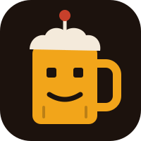
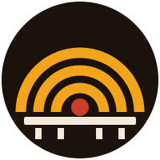
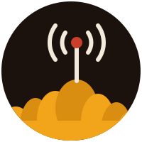
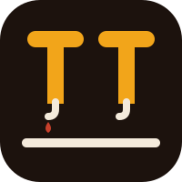
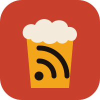
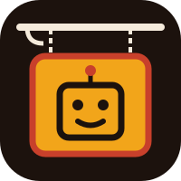
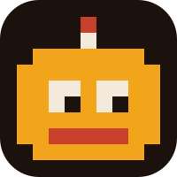
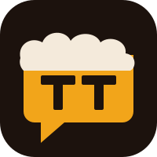
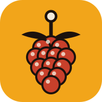
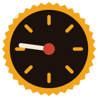

The 2025 mascot, reduced: the robot and the beer become one object.
01-robot-stein.svg
Plovdiv's Roman theatre seen from above; its tiers double as broadcast waves.
02-roman-theatre.svg
Plovdiv's seven hills with a transmitter: local roots, national news.
03-seven-hills.svg
Two Т's (same in Latin and Cyrillic) drawn as beer taps on a bar rail.
04-tt-taps.svg
A pint with the RSS symbol inside: the tavern now pours news.
05-foam-rss.svg
A hanging tavern sign with the robot face; reads as a place, not a product.
06-tavern-sign.svg
8-bit robot head; survives at 16px better than anything else here.
07-pixel-bot.svg
A speech bubble topped with foam: the social space that started it.
08-talking-pint.svg
A raspberry with an antenna: the Raspberry Pi and Hermes agent that run the site.
09-raspberry-bot.svg
A beer mat as a 24h dial: 8 ticks for the 3-hour fetch, the hand on 18:30 for the digest.
10-coaster-clock.svg